SERIES
This page introduces the Harry Potter Series.
Harry Potter and the Philosopher's Stone (2001)
-
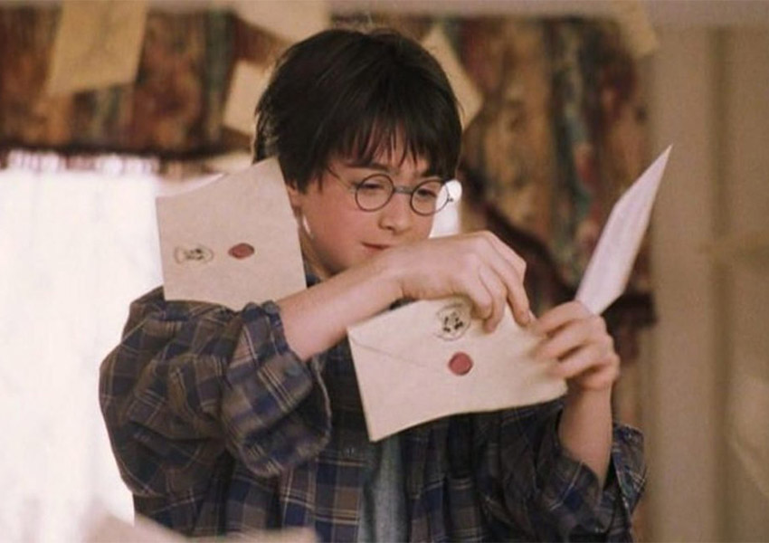
- Harry Potter
- Hogwarts mailed admission notice to Harry.
-
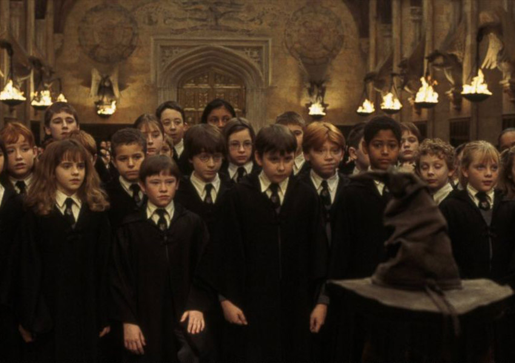
- Sorting Hat
- Magically determines which of the four school Houses each new student belongs most to.
-
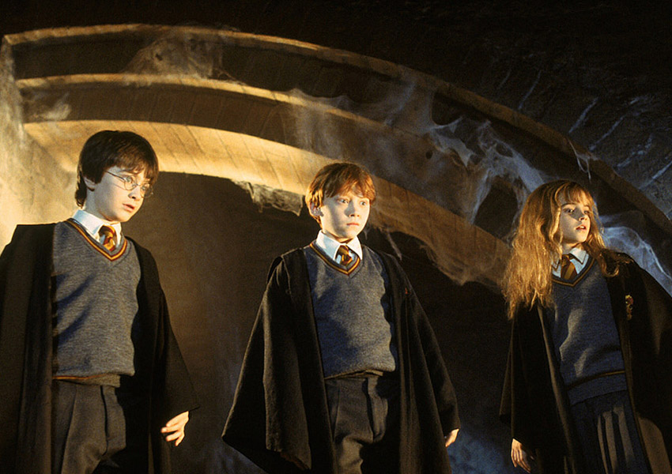
- Fluffy
- Fluffy is an extremely large three-headed dog, apparently loyal to Hagrid.
-
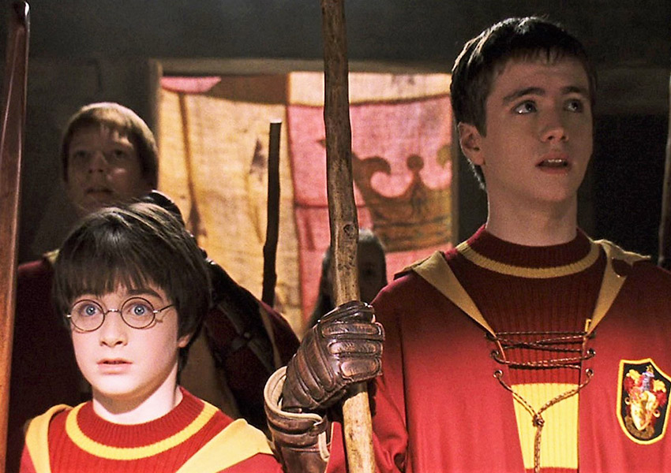
- Quidditch
- Quidditch is a fictional sport invented by author J.K. Rowling for her fantasy book series Harry Potter.
Harry Potter is an orphaned boy brought up by his unkind Muggle (non-magical) aunt and uncle. At the age of eleven, half-giant Rubeus Hagrid informs him that he is actually a wizard and that his parents were murdered by an evil wizard named Lord Voldemort. Voldemort also attempted to kill one-year-old Harry on the same night, but his killing curse mysteriously rebounded and reduced him to a weak and helpless form. Harry became extremely famous in the Wizarding World as a result. Harry begins his first year at Hogwarts School of Witchcraft and Wizardry and learns about magic. During the year, Harry and his friends Ron Weasley and Hermione Granger become entangled in the mystery of the Philosopher's Stone which is being kept within the school.
Harry Potter and the Chamber of Secrets (2002)
-
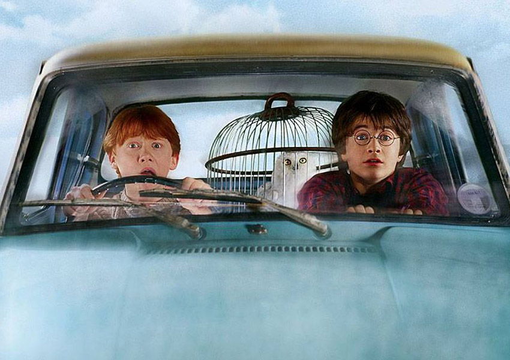
- Flying Ford Anglia
- It was a light blue Ford Anglia 105E Deluxe that was enchanted by Arthur Weasley to fly, as well as to become invisible, with the use of a specially installed device called an Invisibility Booster.
-
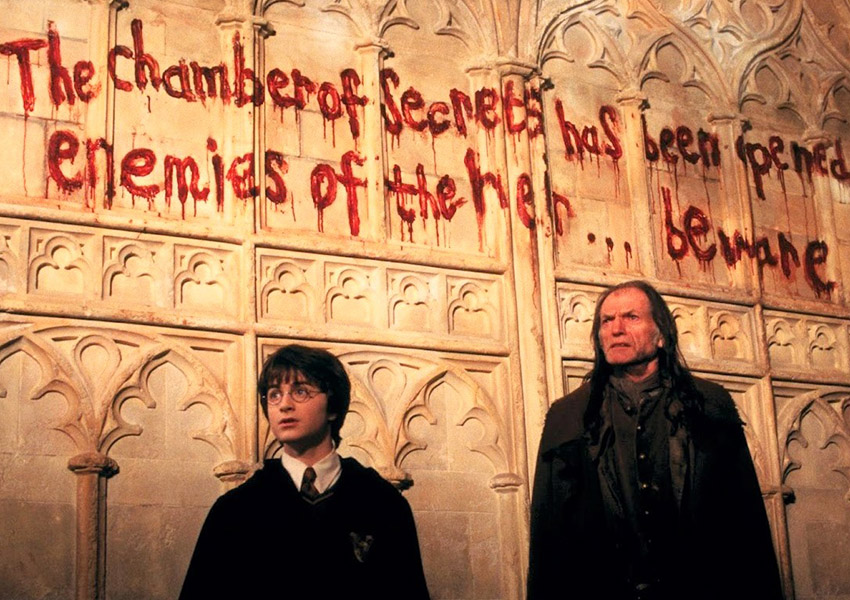
- The Chamber of Secrets
- Mrs Norris was the first victim of the Serpent of Slytherin.
-
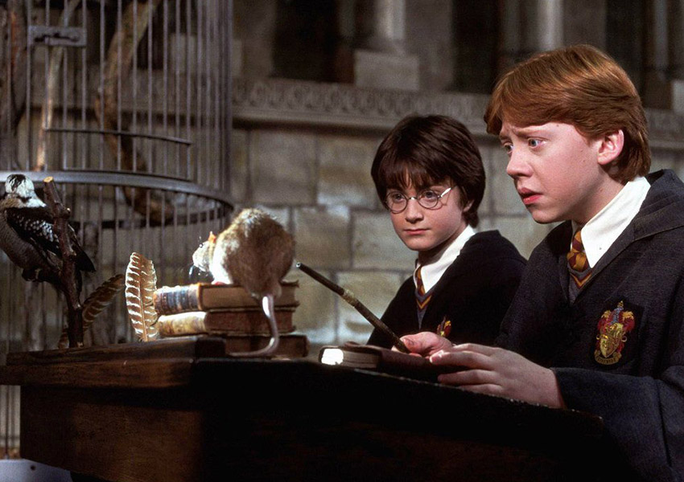
- Vera Verto
- Vera Verto was the incantation of a transfiguration spell used to transform an animal into a water goblet.
-
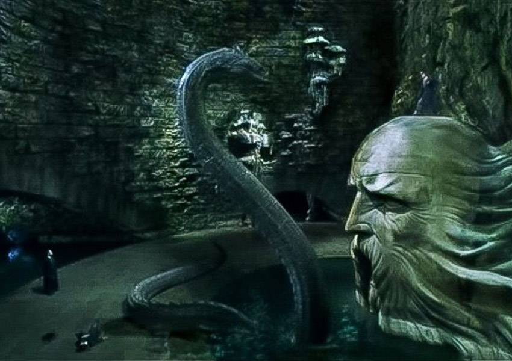
- Tom Riddle
- He learned about the Chamber of Secrets and Slytherin's heir, and he plotted to purge the school of Muggle-borns, and others unworthy of the gift of magic.
Harry, Ron, and Hermione return to Hogwarts for their second year, which proves to be more challenging than the last. The Chamber of Secrets has been opened, leaving students and ghosts petrified by an unleashed monster. Harry must face up to claims that he is the heir of Salazar Slytherin (founder of the Chamber), learn that he can speak Parseltongue, and also discover the properties of a mysterious diary, only to find himself trapped within the Chamber of Secrets itself.
Harry Potter and the Prisoner of Azkaban (2004)
-
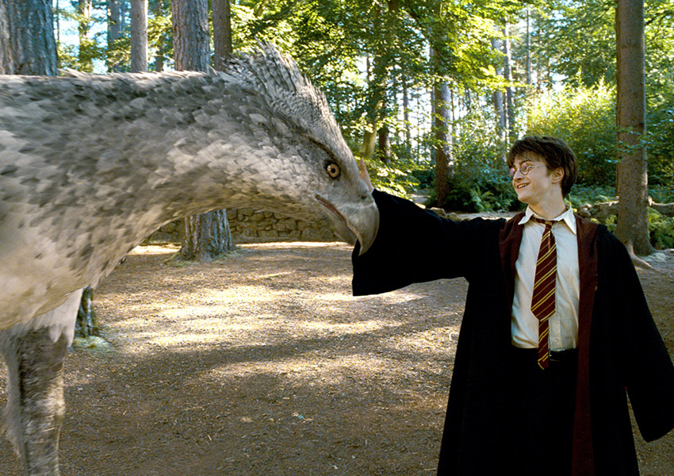
- Buckbeak
- Buckbeak, the Hippogriff that allows Harry to fly on his back and injures Malfoy, also has large, piercing orange eyes and a great, sharp head.
-
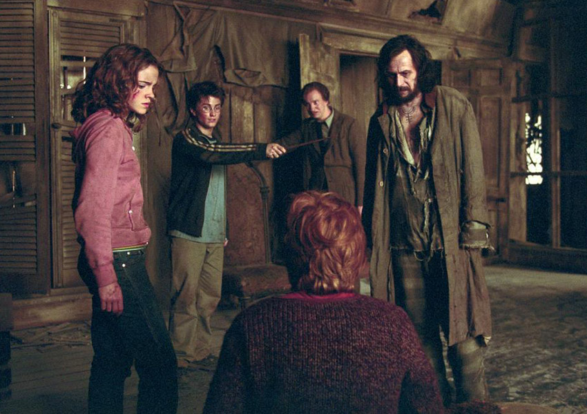
- Sirius Black
- After twelve years became the only known person to escape the prison unassisted by transforming into his Animagus form of a massive black dog often confused with a "Grim", an omen said to cause death.
-
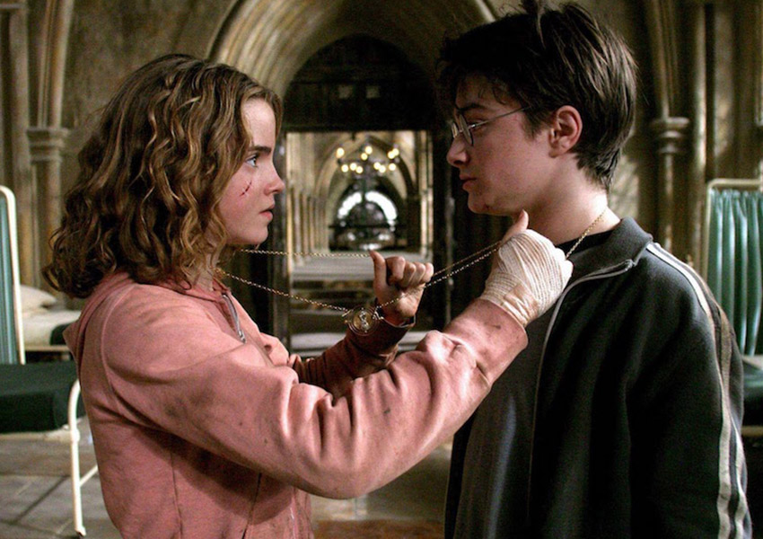
- Time Turner
- The Time-Turner, as its name says - turns back the time by few hours.
-
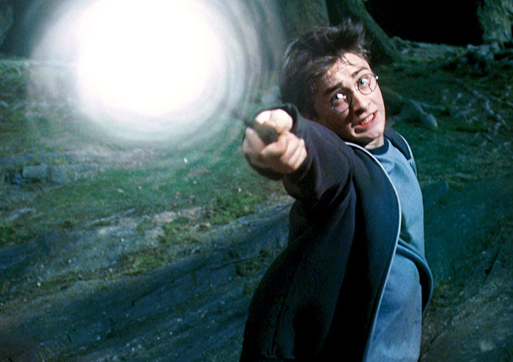
- Expecto Patronum
- We know from the description of the Animagus that the form the wizard takes when transformed is related to his personality.
Harry Potter's third year sees the boy wizard, along with his friends, attending Hogwarts School once again. Professor R. J. Lupin joins the staff as Defence Against the Dark Arts teacher, while convicted murderer Sirius Black escapes from Azkaban Prison. The Ministry of Magic entrusts the Dementors of Azkaban to guard Hogwarts from Black. Harry learns more about his past and his connection with the escaped prisoner.
Harry Potter and the Goblet of Fire (2005)
-
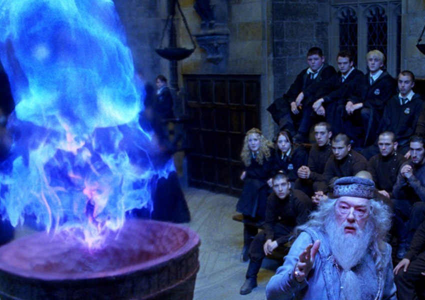
- Goblet of Fire
- The Goblet of Fire was the "impartial judge" for the Triwizard Tournament, who chose which students will represent their respective schools during the upcoming tasks of the tournament.
-
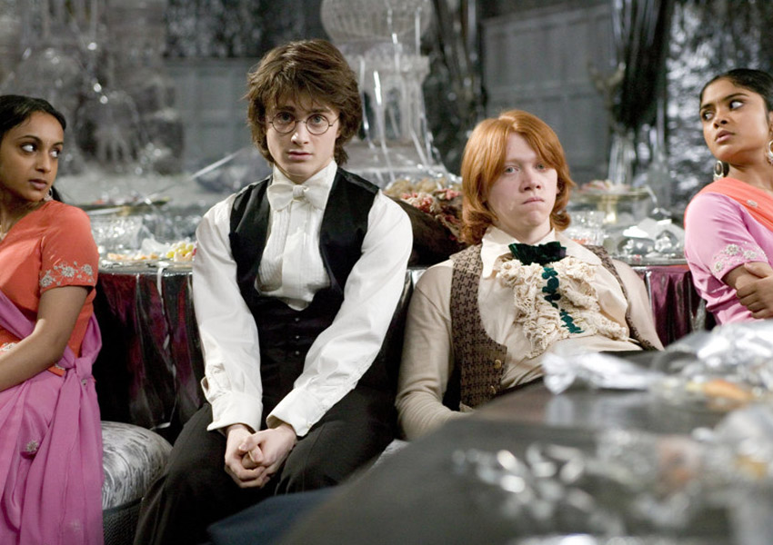
- Yule Ball
- The Yule Ball was a formal Christmas celebration, which was held for students of Wizarding schools who participated in the Triwizard Tournament, on the 25 December.
-
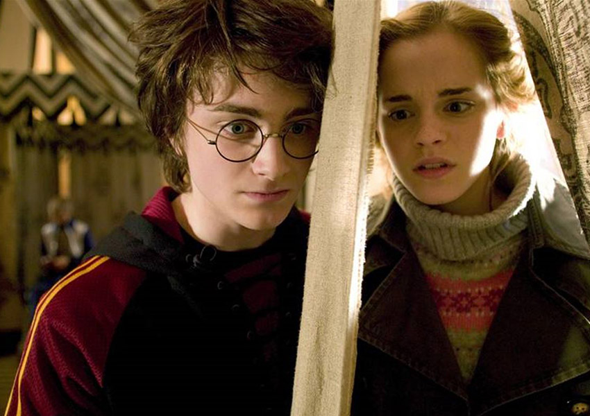
- The Dragon Challenge
- The objective was to retrieve a golden egg that was being guarded by a dragon — the egg would be located within a clutch of real dragon eggs.
-
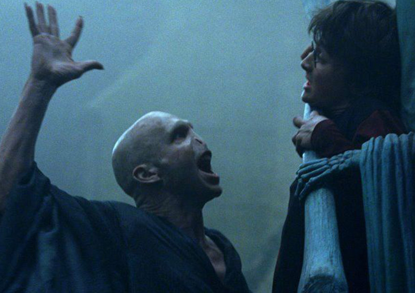
- Return of Lord Voldemort
- The Return of the Dark Lord took place in the graveyard of Little Hangleton, when Voldemort was restored to physical form and full magical power after being incorporeal for nearly fourteen years.
During Harry's fourth year, Hogwarts plays host to a legendary event: the Triwizard Tournament. Three European schools participate in the tournament, with three 'champions' representing each school in the deadly tasks. The Goblet of Fire chooses Fleur Delacour, Viktor Krum, and Cedric Diggory to compete against each other. However, curiously, Harry's name is also produced from the Goblet thus making him a fourth champion, which results in a terrifying encounter with a reborn Lord Voldemort.
Harry Potter and the Order of the Phoenix (2007)
-
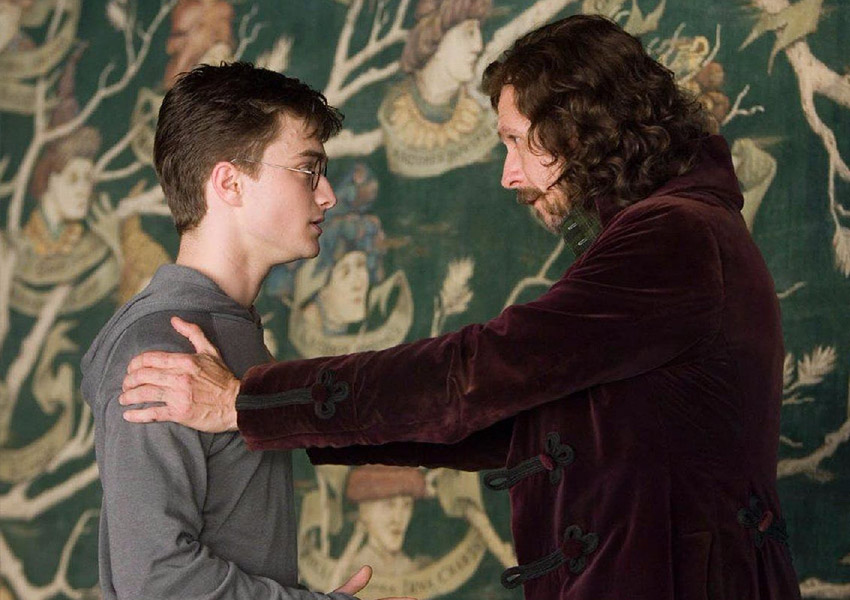
- Sirius Black
- Sirius was named the godfather of Harry James Potter, the only son of James and Lily Potter.
-
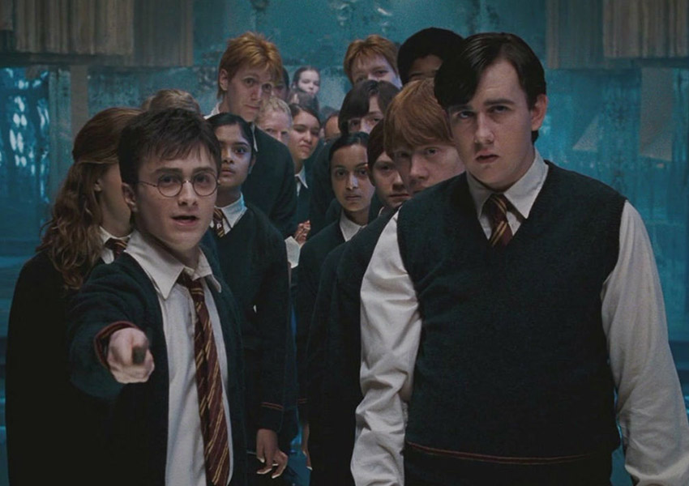
- Dumbledore's Army
- Dumbledore's Army was a secret organisation initiated to teach their fellow Hogwarts colleagues proper Defence Against the Dark Arts.
-
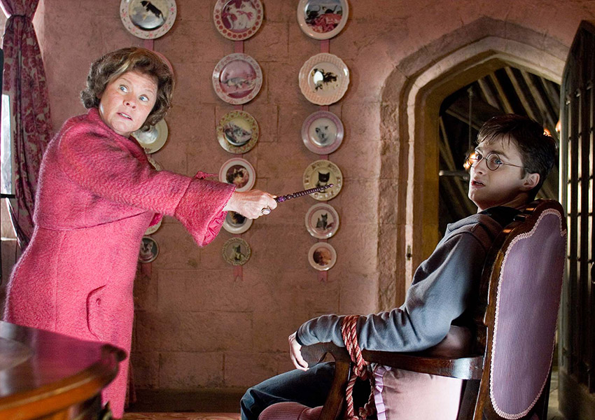
- Dolores Jane Umbridge
- She was installed as the later the Hogwarts High Inquisitor and Headmistress of Hogwarts School of Witchcraft and Wizardry, after Professor Albus Dumbledore had been fired.
-
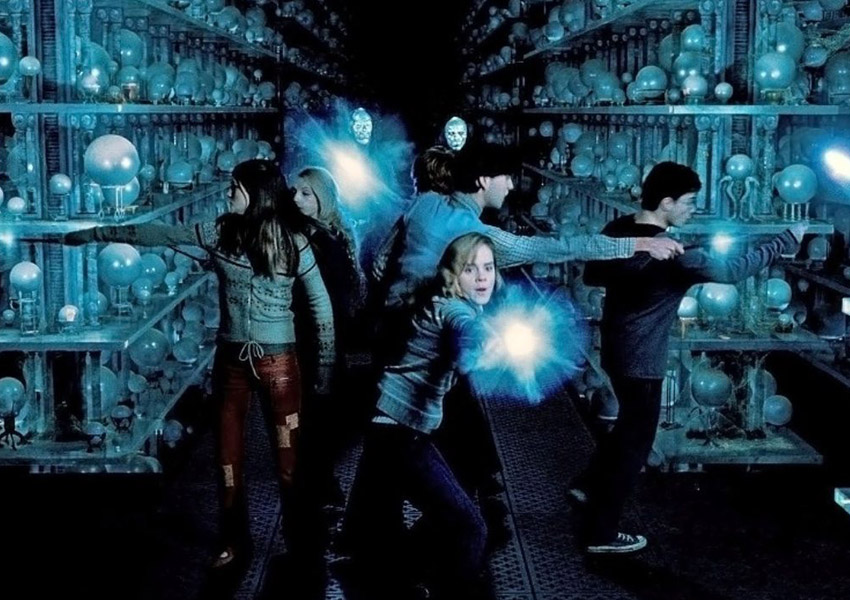
- Room of Prophecy
- together with Hermione, Ron, Neville, Genie, and Luna, they enter the Mystery Department of the Ministry of Magic and find the Room of Prophecy.
Harry's fifth year begins with him being attacked by Dementors in Little Whinging. Later, he finds out that the Ministry of Magic is in denial of Lord Voldemort's return. Harry is also beset by disturbing and realistic nightmares, while Professor Umbridge, a representative of Minister for Magic Cornelius Fudge, is the new Defence Against the Dark Arts teacher. Harry becomes aware that Voldemort is after a prophecy which reveals: "neither can live while the other survives". The rebellion involving the students of Hogwarts, secret organisation Order of the Phoenix, the Ministry of Magic, and the Death Eaters begins.
Harry Potter and the Half-Blood Prince (2009)
-
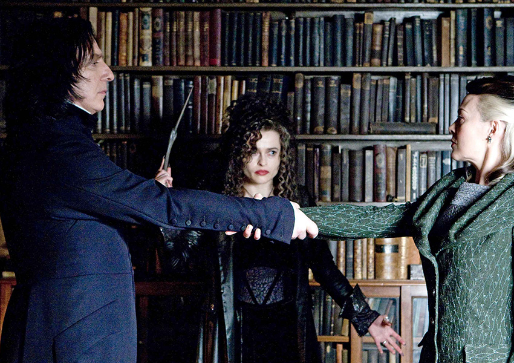
- Unbreakable Vow
- The Vow is cast by having two parties kneeling opposite each other and clasping right hands. Then, the first will ask a certain number of vows of the other, with the second accepting those terms.
-
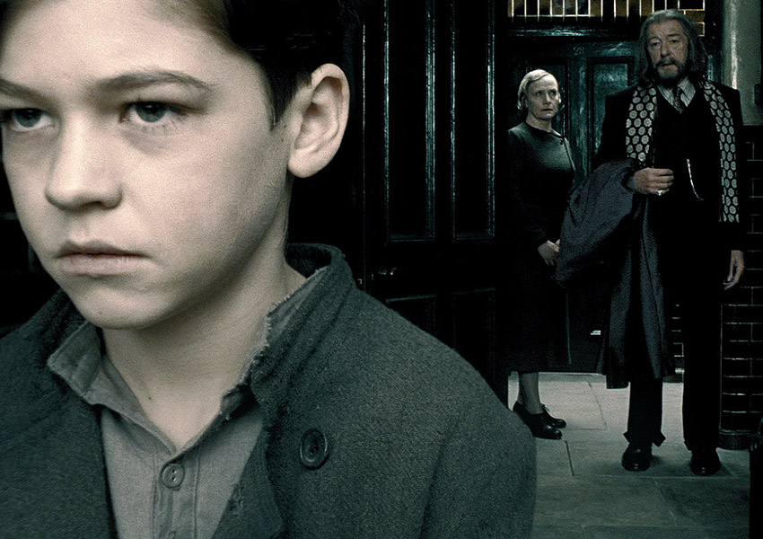
- First Meets Tom Riddle
- August, 1938: After charming the skeptical matron with magic, manners, and gin, Dumbledore meets Riddle in his room and reveals that the boy is a wizard and invites him to Hogwarts.
-
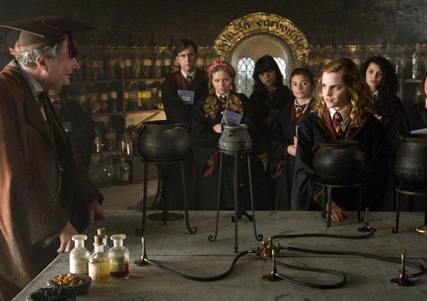
- Magic Potion Class
- Potions is a core class and subject taught at Hogwarts School of Witchcraft and Wizardry and Ilvermorny School of Witchcraft and Wizardry.
-
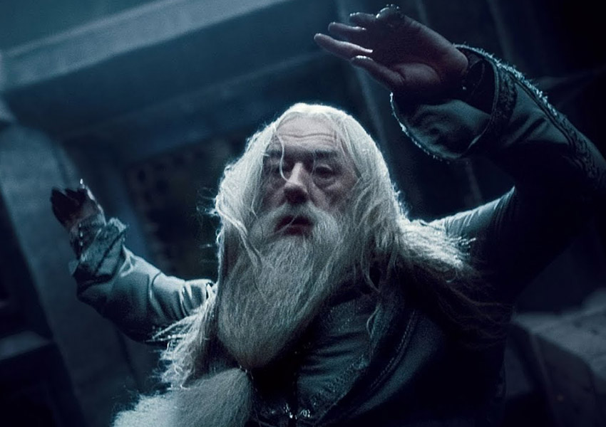
- Dumbledore Died
- When Draco hesitates, Snape appears and performs the Killing Curse on Dumbledore, Dumbledore dies on Hogwarts' grounds.
In Harry's sixth year at Hogwarts, Lord Voldemort and his Death Eaters are increasing their terror upon the Wizarding and Muggle worlds. Headmaster Albus Dumbledore persuades his old friend Horace Slughorn to return to Hogwarts as a professor as there is a vacancy to fill. There is a more important reason, however, for Slughorn's return. While in a Potions lesson, Harry takes possession of a strangely annotated school textbook, inscribed 'This is the property of the Half-Blood Prince'. Draco Malfoy struggles to carry out a deed presented to him by Voldemort. Meanwhile, Dumbledore and Harry secretly work together to discover the method on how to destroy the Dark Lord once and for all.
Harry Potter and the Deathly Hallows – Part 1 (2010)
-
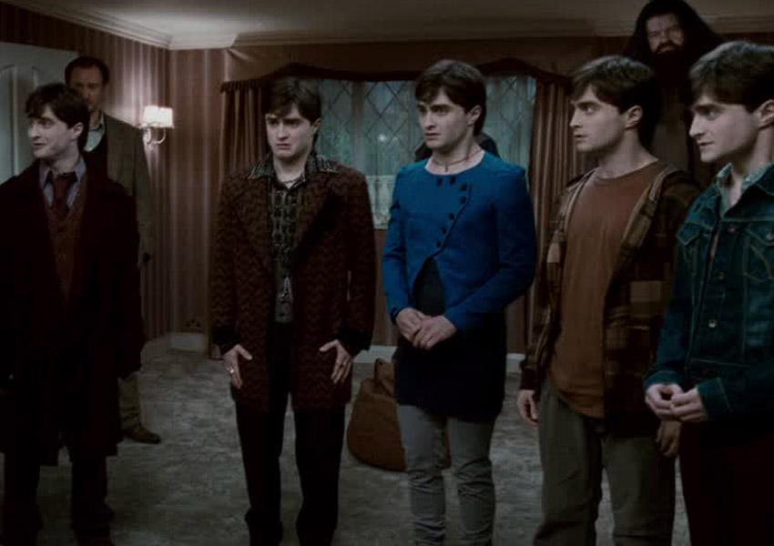
- Polyjuice Potion
- The Polyjuice Potion was a potion that allowed the drinker to assume the form of someone else.
-
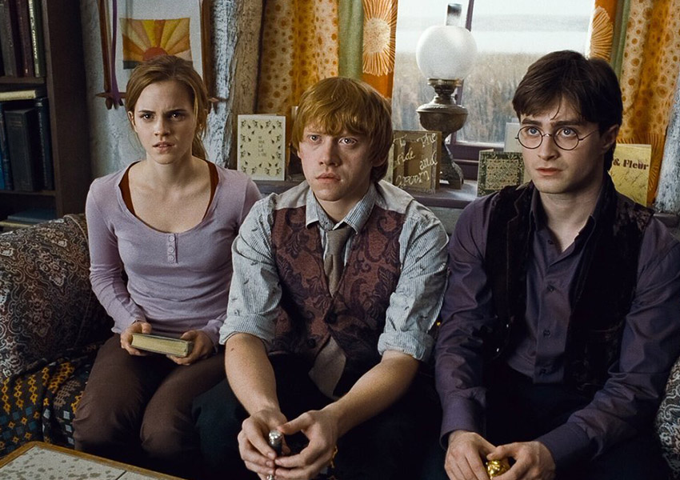
- The Last Will and Testament
- The Last Will and Testament of Albus Dumbledore revealed one month after his death to Harry Potter, Ron Weasley, and Hermione Granger by Minister for Magic Rufus Scrimgeour.
-
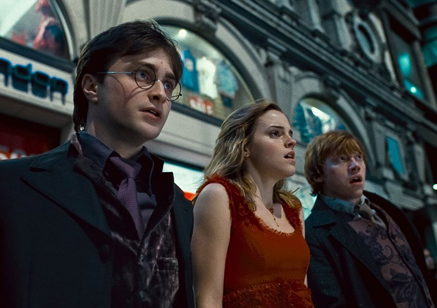
- Apparition
- Apparition was a magical form of transportation, in which the user travelled instantly from one location to another, without traversing the space in-between.
-
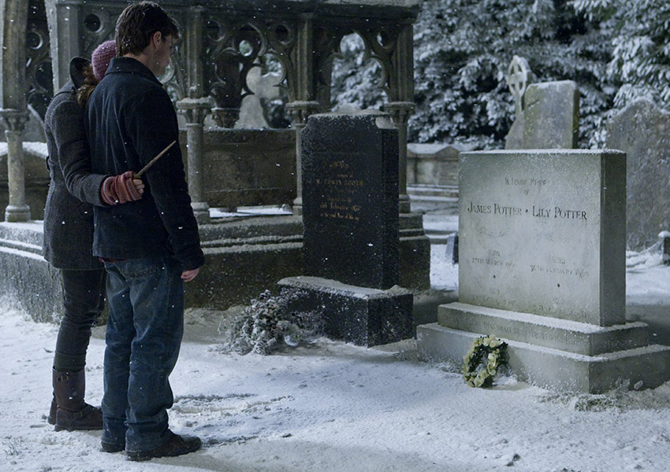
- Godric's Hollow
- It was perhaps most famous as where Harry Potter and his parents lived when he was a baby, where they were murdered, and Lord Voldemort met his first downfall.
After unexpected events at the end of the previous year, Harry, Ron, and Hermione are entrusted with a quest to find and destroy Lord Voldemort's secret to immortality – the Horcruxes. It is supposed to be their final year at Hogwarts, but the collapse of the Ministry of Magic and Voldemort's rise to power prevents them from attending. The trio undergo a long journey with many obstacles in their path including Death Eaters, Snatchers, the mysterious Deathly Hallows, and Harry's connection with the Dark Lord's mind becoming ever stronger.
Harry Potter and the Deathly Hallows – Part 2 (2011)
-
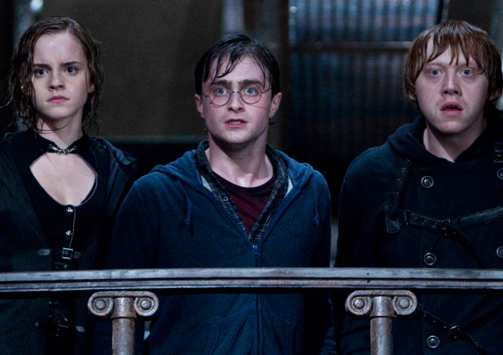
- Gringotts Wizarding Bank
- Gringotts Wizarding Bank is the only bank of the wizarding world, and is owned and operated by goblins.
-
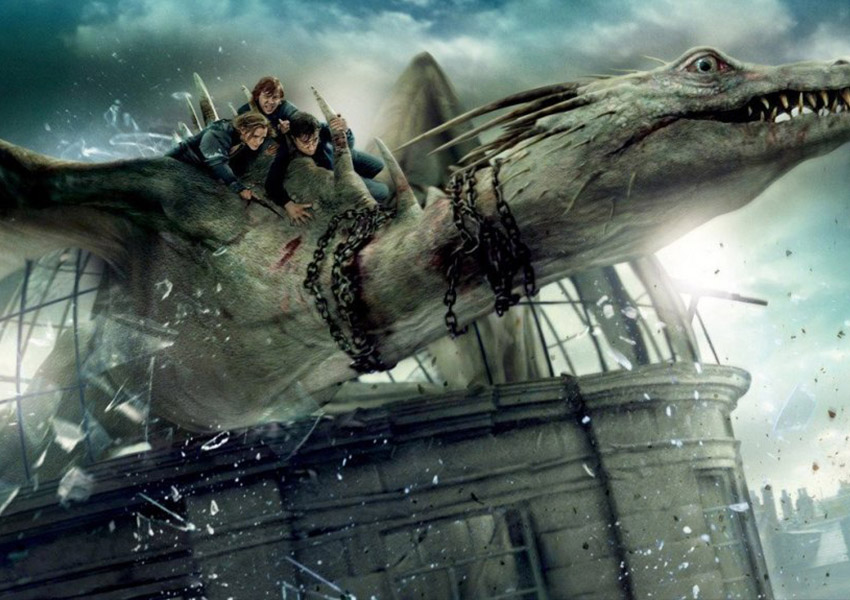
- Ironbelly
- Gringotts Wizarding Bank owned a Ukrainian Ironbelly that guarded some of the oldest and deepest vaults, including the Lestrange Vault.
-
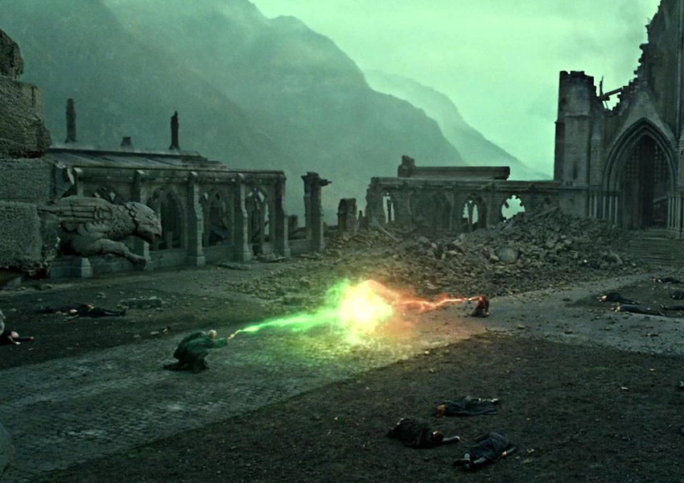
- Voldemort's Last Stand
- Lord Voldemort, the last of his Horcruxes destroyed and mortal once again, was confronted by Harry Potter as the second part of the Battle of Hogwarts progressed.
-
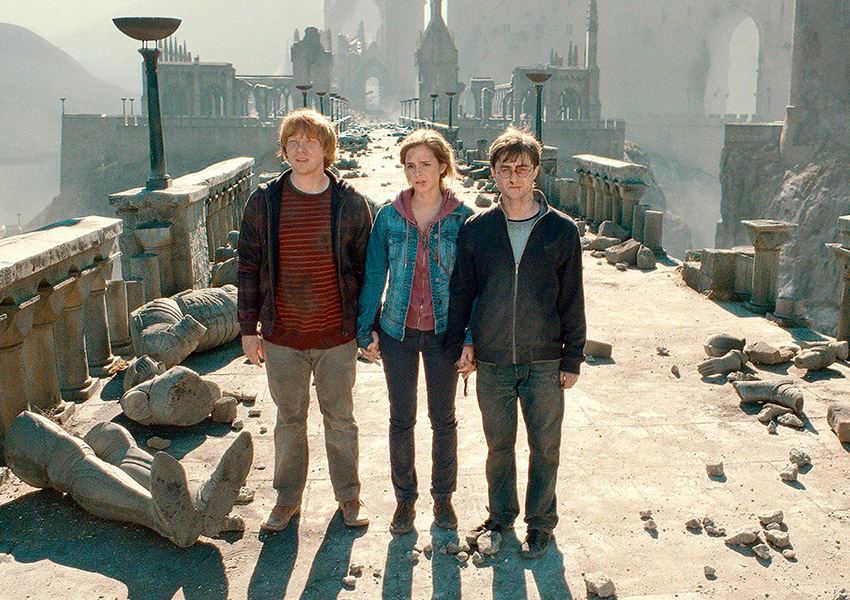
- The end
- Harry broke the Elder Wand because he knows that all its past owners, including Antioch Peverell (its first owner), had used it for boasting and power.
After destroying one Horcrux and discovering the significance of the three Deathly Hallows, Harry, Ron and Hermione continue to seek the other Horcruxes in an attempt to destroy Voldemort, who has now obtained the powerful Elder Wand. The Dark Lord discovers Harry's hunt for Horcruxes and launches an attack on Hogwarts School, where the trio return for one last stand against the dark forces that threaten the Wizarding and Muggle worlds.